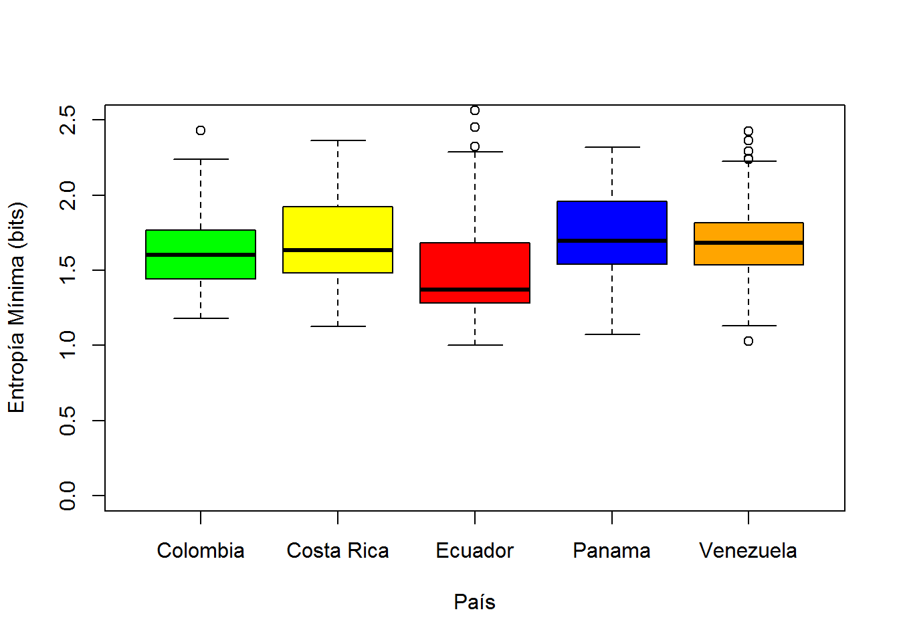

Resultados
Las pruebas de Kruskal-Wallis realizadas para cada una de las métricas medidas demostraron que si hay diferencias el canto de R.ambiguss entre Costa Rica, Panamá, Ecuador, Colombia y Venezuela. En el la figura 1, se puede observar como los promedios de la frecuencia alta entre los distintos países difieren ( χ² =127.94, p> 0.05), los de frecuencia baja ( χ² = 317.72, p> 0.05), los de tiempo máximo ( χ² = 17.038, p> 0.05), así como los promedios de entropía máxima ( χ² =218.67 , p> 0.05), de energía ( χ² =101.87 , p> 0.05), frecuencia máxima ( χ² =55.62 , p> 0.05), máximo poder ( χ² =102.64 , p> 0.05), longitud ( χ² = 22.850, p> 0.05), entropía mínima ( χ² =73.973 , p> 0.05) y frecuencia pico ( χ² = 52.869, p> 0.05).
Los valores máximos de energía, frecuencia pico, frecuencia alta, longitud frecuencia máxima y poder máximo los obtuvo Costa Rica, y los valores mínimos los tuvo Panamá y en algunos casos se empató con Colombia, lo cual significa que las diferencias estuvieron en estos dos países.
Tabla de datos
Tabla<- read.table("https://raw.githubusercontent.com/marilaus96/Ecoaves/master/tabla11.csv",sep = ";",dec =".", header=TRUE)
head(Tabla)## Pais Individuo B.T E.T L.F H.F M.T E MA.E M.F
## 1 Panama 1 5.430 5.929 1210.1 3822.1 5.480 100.8 4.105 3531.4
## 2 Panama 1 5.939 6.456 1185.0 3617.3 5.979 100.0 4.193 3273.0
## 3 Panama 1 10.023 10.548 1210.1 3969.1 10.101 98.7 4.118 1636.5
## 4 Panama 1 10.565 11.259 1344.5 3492.5 10.594 99.1 4.084 3186.9
## 5 Panama 1 11.276 11.884 1075.6 3554.9 11.401 98.9 3.963 3100.8
## 6 Panama 1 15.256 15.756 1496.8 3866.7 15.337 99.2 3.947 3186.9
## M.P MI.E P.F L
## 1 90.8 1.544 3531.4 86
## 2 90.5 1.594 3273.0 89
## 3 86.6 1.895 1636.5 91
## 4 89.8 1.490 3186.9 119
## 5 88.9 1.508 3100.8 105
## 6 87.2 1.804 3186.9 86Kruskal-Wallis para cada variable medida
kruskal.test(H.F ~ Pais, data = Tabla)##
## Kruskal-Wallis rank sum test
##
## data: H.F by Pais
## Kruskal-Wallis chi-squared = 127.94, df = 4, p-value < 2.2e-16 kruskal.test(M.T ~ Pais, data = Tabla)##
## Kruskal-Wallis rank sum test
##
## data: M.T by Pais
## Kruskal-Wallis chi-squared = 17.038, df = 4, p-value = 0.0019 kruskal.test(E ~ Pais, data = Tabla)##
## Kruskal-Wallis rank sum test
##
## data: E by Pais
## Kruskal-Wallis chi-squared = 101.87, df = 4, p-value < 2.2e-16 kruskal.test(MA.E ~ Pais, data = Tabla) ##
## Kruskal-Wallis rank sum test
##
## data: MA.E by Pais
## Kruskal-Wallis chi-squared = 218.67, df = 4, p-value < 2.2e-16 kruskal.test(M.F ~ Pais, data = Tabla)##
## Kruskal-Wallis rank sum test
##
## data: M.F by Pais
## Kruskal-Wallis chi-squared = 55.62, df = 4, p-value = 2.409e-11 kruskal.test(M.P ~ Pais, data = Tabla)##
## Kruskal-Wallis rank sum test
##
## data: M.P by Pais
## Kruskal-Wallis chi-squared = 102.64, df = 4, p-value < 2.2e-16 kruskal.test(P.F ~ Pais, data = Tabla) ##
## Kruskal-Wallis rank sum test
##
## data: P.F by Pais
## Kruskal-Wallis chi-squared = 52.869, df = 4, p-value = 9.075e-11 kruskal.test(L ~ Pais, data = Tabla)##
## Kruskal-Wallis rank sum test
##
## data: L by Pais
## Kruskal-Wallis chi-squared = 22.85, df = 4, p-value = 0.0001357 kruskal.test(L.F ~ Pais, data = Tabla)##
## Kruskal-Wallis rank sum test
##
## data: L.F by Pais
## Kruskal-Wallis chi-squared = 317.72, df = 4, p-value < 2.2e-16boxplot(Tabla$L.F~Tabla$Pais,col=c("green","yellow", "red", "blue","orange"),ylab="Frecuencia Baja (Hz)" , xlab="País",ylim = c(0,2000)) boxplot(Tabla$H.F~Tabla$Pais,col=c("green","yellow", "red", "blue","orange"),ylab="Frecuencia Alta (Hz)" , xlab="País",ylim = c(750,7000))
boxplot(Tabla$M.T~Tabla$Pais,col=c("green","yellow", "red", "blue","orange"), ylab="Tiempo Máximo (s)" , xlab="País",ylim = c(0,30)) boxplot(Tabla$E~Tabla$Pais,col=c("green","yellow", "red", "blue","orange"), ylab="Energía(dB)" , xlab="País",ylim = c(90,120)) boxplot(Tabla$MA.E~Tabla$Pais,col=c("green","yellow", "red", "blue","orange"), ylab="Entropía Máxima (bits)" , xlab="País",ylim = c(3,7)) boxplot(Tabla$M.F~Tabla$Pais,col=c("green","yellow", "red", "blue","orange"), ylab="Frecuencia Máxima (Hz)" , xlab="País",ylim = c(1000,4000)) boxplot(Tabla$M.P~Tabla$Pais, col=c("green","yellow", "red", "blue","orange"), ylab="Poder Máximo (dB)" , xlab="País",ylim = c(70,150)) 
boxplot(Tabla$MI.E~Tabla$Pais,col=c("green","yellow", "red", "blue","orange"), ylab="Entropía Mínima (bits)" , xlab="País",ylim = c(0,2.5)) 
boxplot(Tabla$P.F~Tabla$Pais,col=c("green","yellow", "red", "blue","orange"), ylab="Frecuencia Pico (Hz)" , xlab="País",ylim = c(1000,4000)) boxplot(Tabla$L~Tabla$Pais,col=c("green","yellow", "red", "blue","orange"), ylab="Longitud" , xlab="País",ylim = c(0,450))